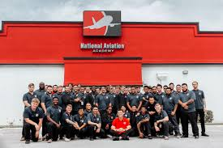

Welcome
The year 2017 has been a year that has brough about may changes and one in which I had more downs and at the same time more ups than any other year. It all began when in December of 2016 when I moved back to the United States after spending over five years in my native country of Trinidad '&' Tobago. I would then move to Clearwater for my son to attend school at the "National Aviation Academy" With no onsite housing we had to make some tough choices to accomidate both our dream for a better tomorrow. and the adventures along the way make for an unforgetable year.